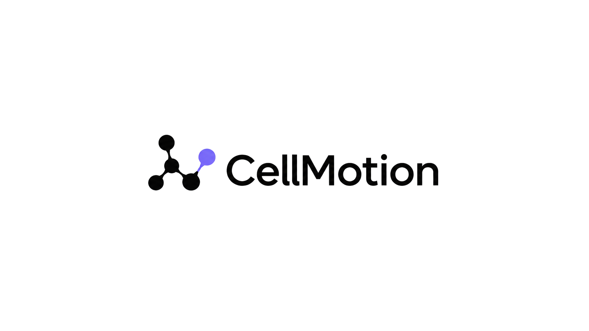

玻璃显标
Glass Icon Reveal
↶
↷
EN
☀
动效库
导出作品
画布尺寸
1:1 · 1080 × 1080
4:5 · 1080 × 1350
3:4 · 1080 × 1440
2:3 · 1080 × 1620
9:16 · 1080 × 1920
16:9 · 1920 × 1080
4:3 · 1440 × 1080
3:2 · 1620 × 1080
自定义
W
H
1080 × 1080
Ⅱ 暂停
↺ 重播
0.00 / 1.95 s